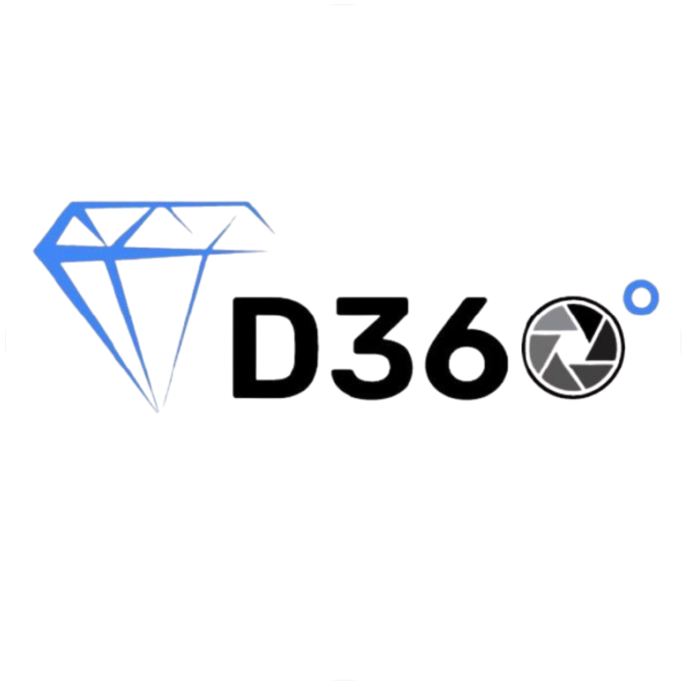

BACKGROUND
Education
Incoming
University of Maryland, College Park
M.S. in Applied Machine Learning
College Park, Maryland

2021 - Present
Institute of Technology, Nirma University
B.Tech. Computer Science and Engineering
Ahmedabad, Gujarat
Cumulative GPA: 7.97 / 10.0

2019 - 2021
Atmiya Vidya Mandir
Higher Secondary School
Surat, Gujarat
HSC: 95.4% | SSC: 92.4%

Experience
January 2025 - Present
Backend Developer & AI Developer
D360 Business Assist
- Developed and integrated backend functionalities for the company’s website, enhancing operational efficiency.
- Utilized Google Cloud Functions to automate backend processes and streamline data workflows.
- Regularly monitored scraped data and refined AI-driven analytical models to enhance business decision-making.
- Designed and implemented an AI-based recommendation system to assist diamond companies in making optimal business deals.

May 2024 - July 2024
Frontend Developer - Intern
Maa Umiya Enterprise
- Spearheaded the development of an e-commerce platform for the chemical products industry, improving user experience and operational efficiency.
- Utilized React.js and Tailwind CSS for a responsive, modern UI, and implemented Firebase for real-time database management.
- Enhanced user engagement and transaction flow, positioning Maa Umiya Enterprise as a tech-driven leader in its domain.

March 2023 - Present
Student Researcher
Sudeep Tanwar’s Research Lab
- Conducting research in AI-driven network security and healthcare applications.
- Contributed to 20+ research projects in various domains.
- Developing a machine learning-based fault detection system for optical fibers in software-defined networks.
- Exploring how vehicular communication can be enhanced using AI and secured using Blockchain.
- Recently got paper accepted in prestigious IEEE ICC Symposium 2025 on ’AI-driven Secure UAV Communication Framework for Document Delivery in Sensitive Areas with 5G’ and a journal paper in Security and Privacy on ’Blockchain-based Network Security Analysis Framework for Telesurgery Systems in Healthcare’.